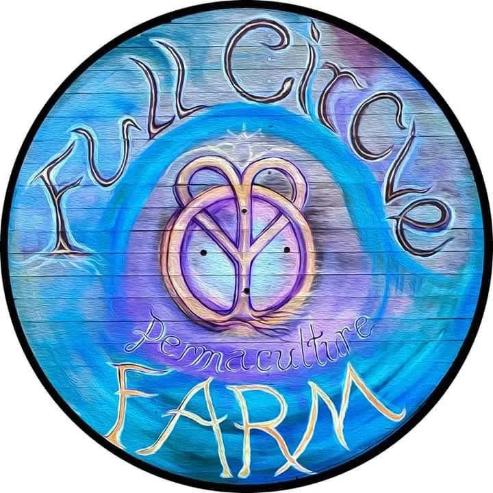
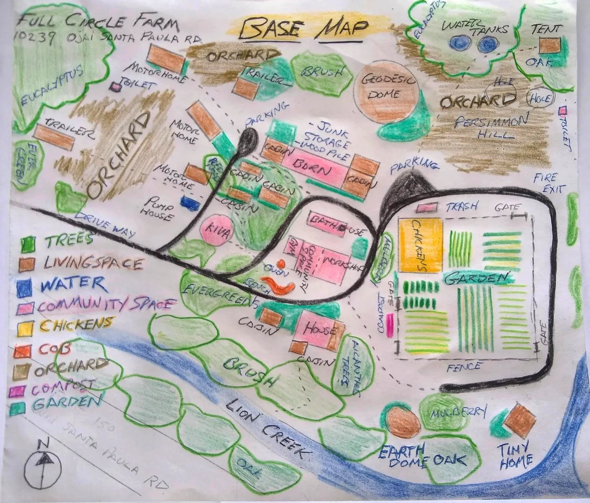
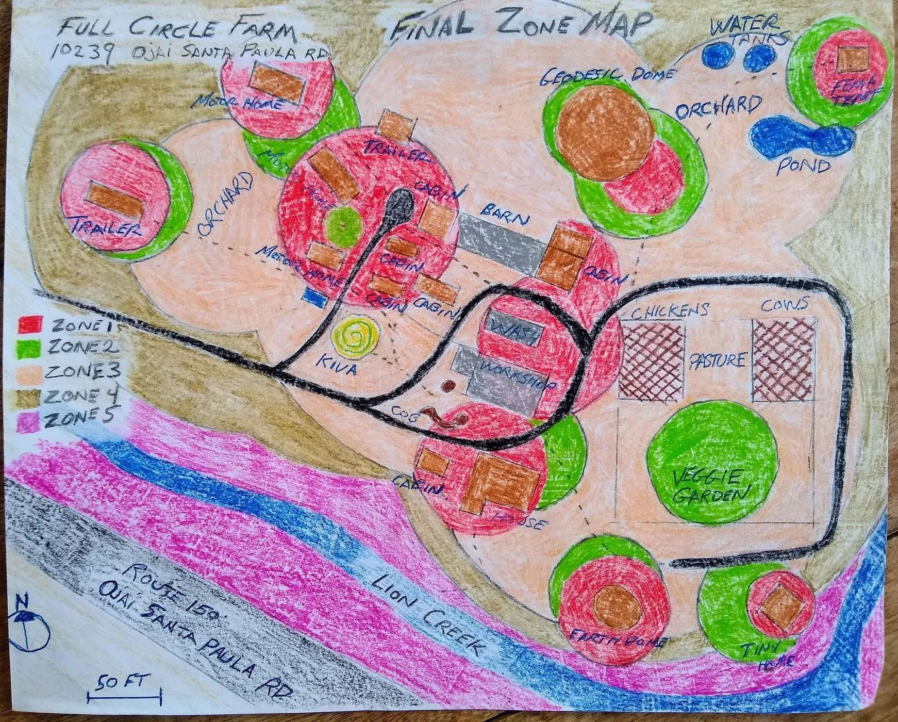

Chapter 08 · The complete project archive
Original Workbook
The website is the reading edition. The workbook remains the full record: observations, research, interviews, surveys, maps, design development and reflection.
Open the 112-page PDF
What the archive contains
The original document shows the entire process, including incomplete ideas and changes of mind. That makes it valuable: it records how a complex design emerged rather than presenting only the polished conclusion.
The web edition condenses repeated course prompts and long research sections, while retaining the site’s story, the most useful observations and the hand-drawn design layers.
Project design
Robert Redecker, in collaboration with Andrew Ranjbaran and the Full Circle Farm community.
Course
Quail Springs Permaculture Design Course, Spring 2022.
Robert Redecker, in collaboration with Andrew Ranjbaran and the Full Circle Farm community.
Course
Quail Springs Permaculture Design Course, Spring 2022.
Contents
- Design site survey
- Base maps and aerial views
- Climate survey
- Client interview
- Regional challenges
- Sector analysis
- Zones and pathways
- Microclimates
- Water survey and map
- Ecology and plant survey
- Soil tests
- Buildings survey
- Final design vision
- Water and fertility plans
- Implementation phases
- Social permaculture reflections



